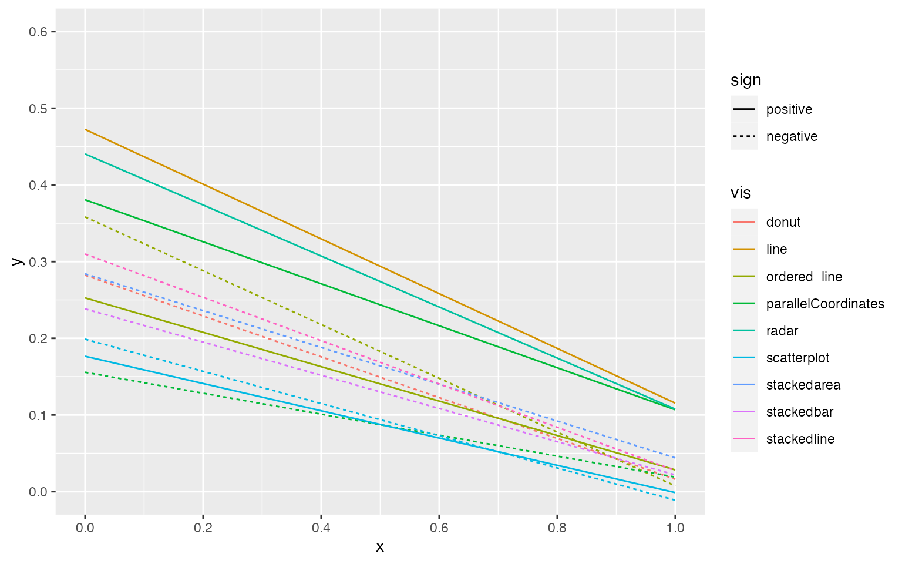
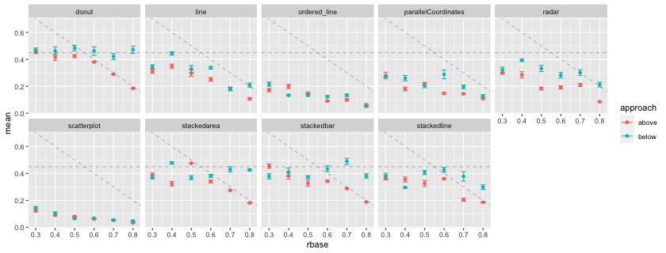
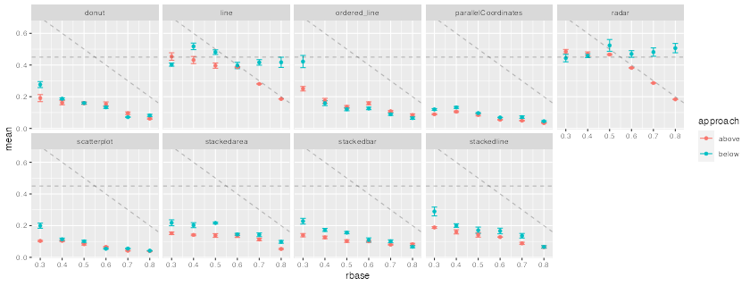
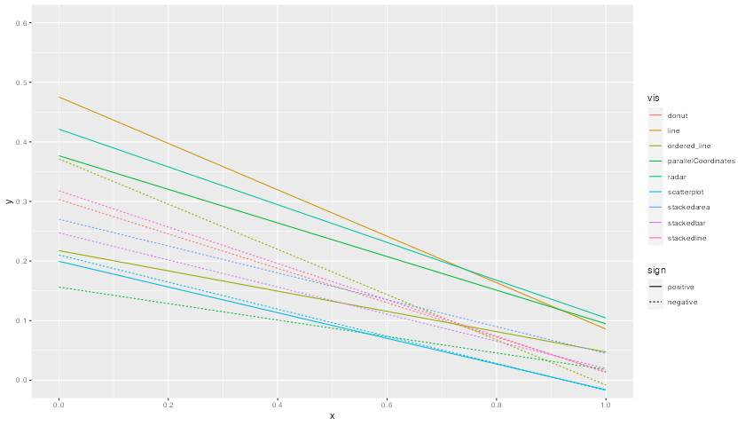

Example multiverse implementation: Recreating Adding inferential treatments to plots using Resampling and Animations using multiverse
Pierre Dragicevic, Inria
Abhraneel Sarma, Northwestern University
2022-05-19
Source:vignettes/dance.Rmd
dance.Rmd
library(knitr)
library(dplyr)
library(tidyr)
library(ggplot2)
library(purrr)
library(broom)
library(gganimate)
library(multiverse)Multiverse case study #3
In this document, we recreate the mini-paper Adding Inferential Information to plots using Resampling and Animations using the multiverse package.
Introduction
The mini-paper presents a method for adding inferential information to arbitrary statistical plots based on resampling and animation. A large number of (non-parametric) bootstrap datasets are created and subjected to the same analyses and plotting procedures than the original dataset. These “bootstrap plots” are then animated to reveal the statistical noise that was hidden in the original plot, in order to help readers appreciate the uncertainty in the quantities, trends and patterns conveyed by the plot. The data used in this example is from a real study taken from the information visualization literature.
The data
The data presented here was collected by Harrison et al. . The goal of their study was to rank nine existing visualizations in their ability to effectively convey correlations. We focus on experiment 2, which was the main experiment and for which data and analysis code are available. In that experiment, nine visualizations were evaluated on 1,600+ crowdsourcing workers on their ability to convey correlation. The staircase method was used to derive just-noticeable difference (JND) values, which capture discrimination capacity: the lower the value, the better the participant can discriminate between correlations.
The experiment involved four independent variables: the visualization type (9 levels), the base correlation value (6 levels), whether the correlation was positive or negative (2 levels), and whether the value was approached from above or from below (2 levels). Each participant carried out 4 tasks, each with a specific combination of conditions.
First, we will quickly show what the original data, and the plots created using this dataset, looks like:
data("vis_correlation")
df <- vis_correlation %>%
group_by( vis, rbase, approach, sign ) %>%
select(-c(condition, visandsign, participant)) %>%
summarise( jnd = list(jnd) ) %>%
mutate(
median = map_dbl(jnd, ~median(.x)),
mads = map_dbl(jnd, ~mad(.x, constant = 1)),
jnd_limit = 3 * mads
) %>%
ungroup()## `summarise()` has grouped output by 'vis', 'rbase', 'approach'. You can
## override using the `.groups` argument.
df.error_bar <- df %>%
unnest( cols = c(jnd) ) %>%
filter( abs(jnd - median) <= jnd_limit ) %>%
group_by( vis, rbase, approach, sign ) %>%
summarise( jnd = list(jnd) ) %>%
mutate(
sd = map_dbl(jnd, ~sd(.x)/sqrt(length(.x))),
mean = map_dbl(jnd, ~mean(.x))
)## `summarise()` has grouped output by 'vis', 'rbase', 'approach'. You can
## override using the `.groups` argument.Just Noticeable Differences (JNDs)
The following figure shows the mean JND for each of the 216 conditions, each displayed as a dot. We show JND as a function of correlation r for both above (light points) and below (dark points) approaches.
df.error_bar %>%
ggplot() +
geom_errorbar(aes(x = rbase, ymin = (mean - sd), ymax = mean + sd, color = approach), width = 0.025) +
geom_point( aes(x = rbase, y = mean, color = approach )) +
geom_hline( yintercept = 0.45, linetype = "dashed", alpha = 0.25) +
geom_abline( slope = -1, intercept = 1, linetype = "dashed", alpha = 0.25) +
facet_wrap(vis ~ sign, ncol = 4)
Regression results
The next figure we show the regression lines for all conditions, as well as the results from a previous similar experiment. To do this we perform the following steps:
- filter out outlier conditions (the donut, stacked area, stacked line and stacked bar chart conditions with positive correlation; the radar and line chart conditions with negative correlation)
filter_outliers <- function(x, median, limit) {
return( x[abs(x - median) <= limit] )
}
df.corr <- df %>%
# the following visualizations were excluded from the analysis
filter(
!((vis == "donut" | vis == "stackedarea" | vis == "stackedline" | vis == "stackedbar") & (sign == 1)) &
!((vis == "radar" | vis == "line") & (sign == -1))
) %>%
mutate( jnd = pmap(list(jnd, median, jnd_limit), filter_outliers) ) %>%
mutate(
mean_jnd = map_dbl(jnd, mean),
n = map_dbl(jnd, length)
)- next we calculate rbase adjustment coefficient (see original paper for more details on this)
- fit the linear model using jnd as the outcome variable, and (computed) rbase metric as the predictor
rbase_adj_coef <- df.corr %>%
group_by( vis, sign, rbase ) %>%
summarise( jnd = list(jnd), mean_jnd = list(mean_jnd), n = list(n), approach = list(approach) ) %>%
mutate( rbase_adj_coef = map2_dbl(mean_jnd, n, ~ sum(.x * .y) / sum(.y)) ) %>%
mutate( rbase_adj_coef = map2_dbl(mean_jnd, n, ~ sum(.x * .y) / sum(.y)) ) %>%
unnest(cols = c(jnd, mean_jnd, approach) ) %>%
magrittr::extract2("rbase_adj_coef")## `summarise()` has grouped output by 'vis', 'sign'. You can override using the
## `.groups` argument.
df.corr_fitted <- df.corr %>%
tibble::add_column( rbase_adj_coef = rbase_adj_coef ) %>%
mutate(
multiplier = ifelse(approach == "above", 1, -1),
rbase = rbase + 0.5 * multiplier * rbase_adj_coef
) %>%
group_by( vis, sign ) %>%
summarise( mean_jnd = list(mean_jnd), rbase = list(rbase), .groups = "drop_last" ) %>%
mutate(
fit = map2(rbase, mean_jnd, ~as.list(coef(lm(.y ~ .x)))),
sign = factor(ifelse(sign == 1, "positive", "negative"), levels = c("positive", "negative"))
) %>%
unnest_wider( col = c(fit) ) %>%
rename( intercept = `(Intercept)`, coef = .x ) %>%
mutate(
x = 0,
xend = 1,
y = intercept + coef * x,
yend = intercept + coef * xend
)- Finally we plot the figure
These results are consistent with the paper’s main findings: using scatterplots to depict correlation results in better performance overall. However, this performance difference only occurs when depicting positively correlated data. In fact, parallel coordinates depicting negatively correlated data appear to perform as well as scatterplots
df.corr_fitted %>%
ggplot() +
geom_segment( aes( x=x, y=y, xend=xend, yend=yend, color = vis, linetype = sign) ) +
coord_cartesian( xlim = c(0, 1), ylim = c(0, 0.6) ) +
scale_y_continuous( breaks = seq(0, 1, by = 0.1)) +
scale_x_continuous( breaks = seq(0, 1, by = 0.2))
Implementation in multiverse
A multiverse implementation in this case might involve resampling to generate alternative dataset using a the common non-parametric bootstrapping approach, as shown by Dragicevic in Adding Inferential Information to plots using Resampling and Animations. This technique enables providing ``inferential information to arbitrary statistical plots based on resampling’’ as in many cases “the bootstrap distribution provides a good approximation of the sampling distribution”.
Note
In this vignette, we make use of the function which is more suited
for a script-style implementation. Keeping consistency with the
interactive programming interface of RStudio, we also offer the user multiverse
code chunks, a custom engine designed to work with the
multiverse package, to implement the multiverse analyses. multiverse
code chunks can be used instead of the r code
block to write code inside a multiverse object. See or refer to the
vignette (vignette("multiverse-in-rmd")) for more details
on using the multiverse with RMarkdown.
Our multiverse implementation begins with first generating alternate datasets using bootstrapping, within a multiverse object:
#data_original <- read.csv("master-alt.csv")
n = 200
M = multiverse()
inside(M, {
set.seed(branch(seed, .options = 1:n))
data.i = vis_correlation %>%
group_by(rbase, sign, vis, approach) %>%
summarise( jnd = list(jnd), .groups = "drop_last" ) %>%
mutate(
sample_size = map_dbl(jnd, length ),
bootstrap_samples = map(jnd, ~ sample( .x, size = sample_size, replace = TRUE))
) %>%
select(-jnd) %>%
unnest( cols = c(bootstrap_samples)) %>%
rename( jnd = bootstrap_samples )
})The subsequent steps are very similar to a single dataset analysis.
inside(M, {
df.i <- data.i %>%
group_by( vis, rbase, approach, sign ) %>%
summarise( jnd = list(jnd), .groups = "drop_last" ) %>%
mutate(
median = map_dbl(jnd, ~median(.x)),
mads = map_dbl(jnd, ~mad(.x, constant = 1)),
jnd_limit = 3 * mads
) %>%
ungroup()
df.error_bar.i <- df.i %>%
unnest( cols = c(jnd) ) %>%
filter( abs(jnd - median) <= jnd_limit ) %>%
group_by( vis, rbase, approach, sign ) %>%
summarise( jnd = list(jnd), .groups = "drop_last" ) %>%
mutate(
sd = map_dbl(jnd, ~sd(.x)/sqrt(length(.x))),
mean = map_dbl(jnd, ~mean(.x))
)
df.corr.i <- df.i %>%
# the following visualizations were excluded from the analysis
filter(
!((vis == "donut" | vis == "stackedarea" | vis == "stackedline" | vis == "stackedbar") & (sign == 1)) &
!((vis == "radar" | vis == "line") & (sign == -1))
) %>%
mutate( jnd = pmap(list(jnd, median, jnd_limit), filter_outliers) ) %>%
mutate(
mean_jnd = map_dbl(jnd, mean),
n = map_dbl(jnd, length)
)
rbase_adj_coef.i <- df.corr.i %>%
group_by( vis, sign, rbase ) %>%
summarise(
jnd = list(jnd), mean_jnd = list(mean_jnd), n = list(n), approach = list(approach),
.groups = "drop_last"
) %>%
mutate( rbase_adj_coef = map2_dbl(mean_jnd, n, ~ sum(.x * .y) / sum(.y)) ) %>%
mutate( rbase_adj_coef = map2_dbl(mean_jnd, n, ~ sum(.x * .y) / sum(.y)) ) %>%
unnest(cols = c(jnd, mean_jnd, approach) ) %>%
magrittr::extract2("rbase_adj_coef")
df.corr_fitted.i <- df.corr.i %>%
tibble::add_column( rbase_adj_coef = rbase_adj_coef ) %>%
mutate(
multiplier = ifelse(approach == "above", 1, -1),
rbase = rbase + 0.5 * multiplier * rbase_adj_coef
) %>%
group_by( vis, sign ) %>%
summarise( mean_jnd = list(mean_jnd), rbase = list(rbase), .groups = "drop_last" ) %>%
mutate(
fit = map2(rbase, mean_jnd, ~as.list(coef(lm(.y ~ .x)))),
sign = factor(ifelse(sign == 1, "positive", "negative"), levels = c("positive", "negative"))
) %>%
unnest_wider( col = c(fit) ) %>%
rename( intercept = `(Intercept)`, coef = .x ) %>%
mutate(
x = 0,
xend = 1,
y = intercept + coef * x,
yend = intercept + coef * xend
)
})We then execute the entire multiverse analysis:
Once we have the results stored from each unique analysis from our defined multiverse in the multiverse object, we can visualise the results. Animation can be used to show outcomes of multiple simulated replications of the same hypothetical experiment. The term statistical dance has been used to refer to such plots. Dragicevic writes:
This term originates from Geoff Cumming’s “dance of p-values”, a simple simulation that was meant to show how widely p-values vary across replications [5]. The simulation consisted in repeatedly drawing a sample from two normal distributions and computing the p-value for the difference in means. A dance of 95% confidence intervals was also shown. This idea was later applied to Bayes factors [6] and to a range of other statistics [4].
Statistical dances are a particular case hypothetical outcome plots (HOPs) [7], that “visualize a set of draws from a distribution, where each draw is shown as a new plot in either a small multiples or animated form”.
The following plots shows the mean JND for each of the 216 conditions as a point estimate with the corresponding error bars communicating inferential uncertainty. As inferential information is already conveyed by the way of error bars, the dance is somewhat redundant. However, showing the dance still has educational value, as researchers tend to grossly overestimate the reliability and the replicability of inferential statistics such as p-values [5] and confidence intervals [4]. One might notice that the error bars are jumping more wildly than in a regular dance of 95% confidence intervals [5, 4]. This is because the error bars are standard errors, which are approximately twice as short as 95% CIs. Although in the original article this was clearly stated in the Figure caption, the dance might make it less likely for the reader to miss this important information.
p.above <- expand(M) %>%
mutate(data = map(.results, "df.error_bar.i")) %>%
unnest( cols = c(data) ) %>%
filter( sign == 1 ) %>%
ggplot() +
geom_errorbar(aes(x = rbase, ymin = (mean - sd), ymax = mean + sd, color = approach), width = 0.025) +
geom_point( aes(x = rbase, y = mean, color = approach )) +
geom_hline( yintercept = 0.45, linetype = "dashed", alpha = 0.25) +
geom_abline( slope = -1, intercept = 1, linetype = "dashed", alpha = 0.25) +
facet_wrap( ~ vis, nrow = 2) +
transition_manual(.universe)
animate(p.above, nframes = n, fps = 3, width = 840, height = 320)
p.below <- expand(M) %>%
mutate(data = map(.results, "df.error_bar.i")) %>%
unnest( cols = c(data) ) %>%
filter( sign == -1 ) %>%
ggplot() +
geom_errorbar(aes(x = rbase, ymin = (mean - sd), ymax = mean + sd, color = approach), width = 0.025) +
geom_point( aes(x = rbase, y = mean, color = approach )) +
geom_hline( yintercept = 0.45, linetype = "dashed", alpha = 0.25) +
geom_abline( slope = -1, intercept = 1, linetype = "dashed", alpha = 0.25) +
facet_wrap( ~ vis, nrow = 2) +
transition_manual(.universe)
animate(p.below, nframes = n, fps = 3, width = 840, height = 320)
The following figure shows the regression lines for all conditions.
The lower a line the better the performance. Some differences are large and extremely consistent across bootstrap datasets: for example, the inferiority of line-positive over the two other conditions on the first plot, or the inferiority of parallel-coordinates-positive on the last plot. Other differences are less clear but actually hold in a vast majority of bootstrap datasets: for example, the overall superiority of radar-positive in the second plot and of stackedbar-negative in the third plot. In contrast, many other comparisons are inconclusive. All these informal inferences agree with formal null hypothesis significance tests reported in the original paper. Although formal tests inspire more confidence to many readers, interpreting them together with effect size figures requires constant back and forth between figures and p-values provided in the text or in a table. Doing so is often quite tedious and can easily cause impatient readers to give up and be content with a superficial examination of the results.
It is possible, and common practice, to display a 95% confidence interval around a regression line by plotting a confidence limit curve on each side of the line. Such visual representations can greatly facilitate inference but can also easily produce cluttered plots. Although it may have been possible to add 95% confidence intervals to following figure, doing so would have likely rendered it illegible.
p.fitted_lines <- expand(M) %>%
mutate(data = map(.results, "df.corr_fitted.i")) %>%
unnest( cols = c(data) ) %>%
ggplot() +
geom_segment( aes( x=x, y=y, xend=xend, yend=yend, color = vis, linetype = sign) ) +
coord_cartesian( xlim = c(0, 1), ylim = c(0, 0.6) ) +
scale_y_continuous( breaks = seq(0, 1, by = 0.1)) +
scale_x_continuous( breaks = seq(0, 1, by = 0.2)) +
transition_manual(.universe)
animate(p.fitted_lines, nframes = n, fps = 3, width = 840, height = 480)
The figure is consistent with Harrison et al.’s main findings: ”using scatterplots to depict correlation results in better performance overall. However, this performance difference only occurs when depicting positively correlated data. In fact, parallel coordinates depicting negatively correlated data appear to perform as well as scatterplots”. The statistical dance gives credence to these conclusions, while at the same time providing a faithful illustration of the uncertainty behind the estimates. The reader is free to linger on the figure and go beyond the authors’ own summary of findings by examining other comparisons and drawing their own conclusions. All necessary information on effect sizes and inferential statistics is seamlessly combined into this single animated figure, and it would take pages and pages of text to fully describe it.